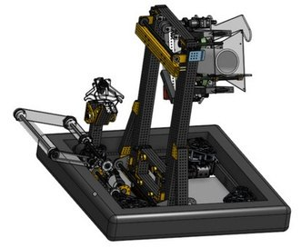
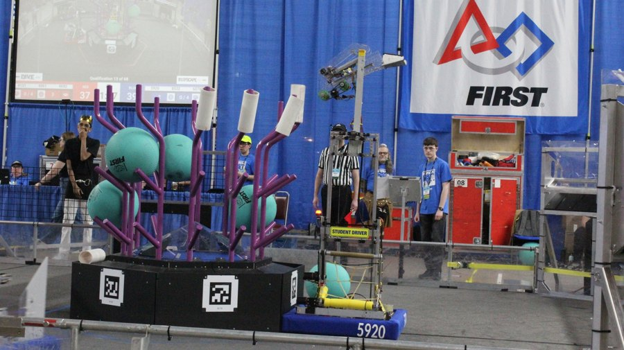

FIRST Robotics Competition, Design Mentor
A high school FRC team was developing its intake and climb for the 2025 season.
I mentored students through CAD, tolerance planning, and iterative prototyping.
We refined the slap-down intake for smoother actuation and more reliable game-piece handling, integrating it with a dual-stage elevator and endgame climb.
The team overcame early mechanical issues and finished among the top five scorers in Pacific Northwest regional competitions.


